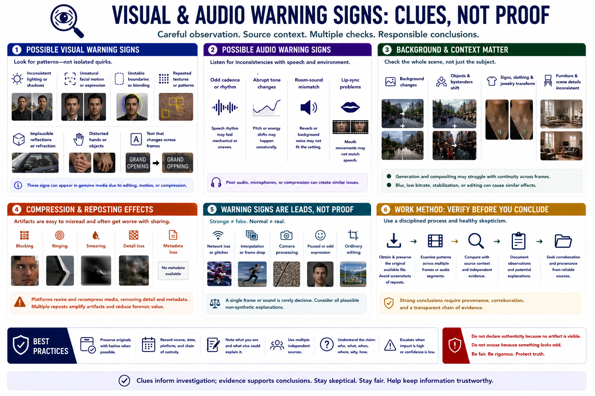

Common Warning Signs and Limits
Connecting to LMS... Progress: in progress

Narration
Possible visual warning signs include inconsistent lighting or shadows, unnatural facial motion, unstable boundaries, repeated textures, implausible reflections, distorted hands or objects, and text that changes across frames. Audio clues may include odd cadence, abrupt tone changes, room-sound mismatch, or lip-sync problems.
Background details deserve attention because generation and compositing may struggle with continuity. Signs, jewelry, clothing, furniture, and bystanders may transform across frames. However, motion blur, low bitrate, stabilization, and ordinary editing can produce similar effects.
Compression artifacts are especially easy to misread. Social platforms resize and recompress media, destroying detail and creating blocks, ringing, or smearing. Multiple reposts make artifacts worse and can remove metadata that might otherwise help.
Warning signs are leads, not proof. A single strange frame may result from network loss, interpolation, camera processing, or a paused expression. Genuine media can look artificial, and synthetic media can look natural.
Examine patterns across multiple frames or audio segments and compare them with source context. Preserve the original available file rather than relying on a screenshot of a repost. Document what was observed and plausible non-synthetic explanations.
Do not declare authenticity because no artifact is visible. High-quality synthetic content may be technically convincing. Conversely, do not accuse a person or publisher because an image looks odd. Strong conclusions require provenance, corroboration, and a transparent chain of evidence.